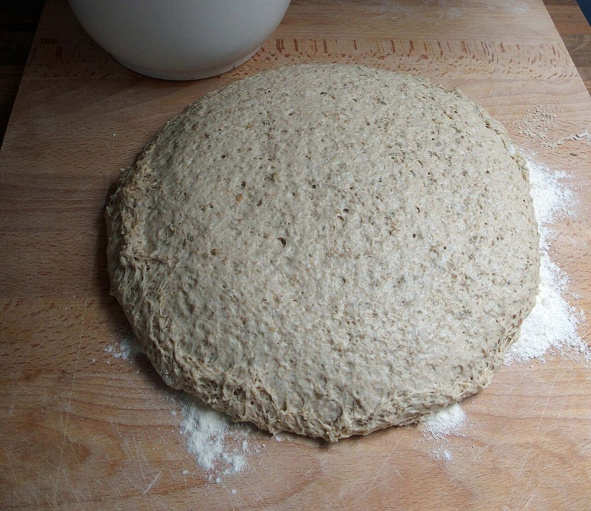

1起

まず、粉と麦。
ここから始まる、という想定の一コマ目。
制作側の連想
屋号の由来は分かりません。制作側は、パンができるまでを起・承・転・結の四コマ漫画に見立てて、このサイトを組み立てました。お店の理念・由来とは無関係な、制作側の連想です。下の四コマの写真はイメージで、お店の工程や商品ではありません。
ここから始まる、という想定の一コマ目。

生地を待つ時間を、ふくらみの一コマで。

四コマのうち、いちばん色が変わる三コマ目。

オチは、焼き色のついたパンの姿で。
おしまい。続きは、実際のお店で。
ご案内
| 所在地 | 〒665-0051 兵庫県宝塚市高司1丁目7-1 |
|---|---|
| 電話 | なし |
| 営業時間 | 準備中 |
| 定休日 | 準備中 |
| ご予約 | 準備中 |
| 駐車場 | 準備中 |
| SNS | Instagram @heidi_brot_takarazuka |